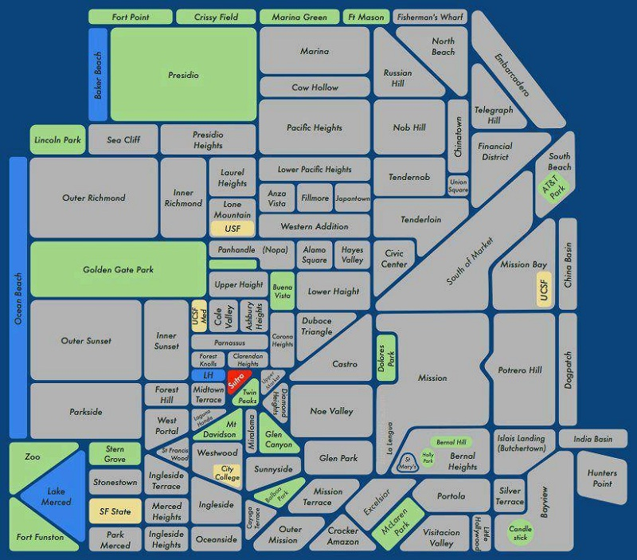

San Francisco City College
I started going to San Francisco Community College in the Fall of 2010. Before taking courses at this college I looked at other
colleges in the Bay Area to ensure that this was the best community college for me.
 While there are other colleges that are closer to where I live, CCSF offered the most courses in Computer Science out of every college that I looked at.
This is what I used to determine that City College was right for me. I do not mind driving further when it comes to my education.
Other colleges offered less courses and of those that they did offer most were all on-line. While I do not mind online classes I
know that I am able to learn a lot more when I am able to attend class in person. As such, CCSF is the college of my choice as it provided
the most variety of course I can take.
While there are other colleges that are closer to where I live, CCSF offered the most courses in Computer Science out of every college that I looked at.
This is what I used to determine that City College was right for me. I do not mind driving further when it comes to my education.
Other colleges offered less courses and of those that they did offer most were all on-line. While I do not mind online classes I
know that I am able to learn a lot more when I am able to attend class in person. As such, CCSF is the college of my choice as it provided
the most variety of course I can take.
San Francisco City Map
Here is a map that provides a good overview of San Francisco where all parts of the city are broken down into groups. This is a good general overview of the city that can be used to get a good basic understanding of where everything is located.  Looking at this map you can see where San Francisco City College is located in relation to everything else in the city. It should be noted that while CCSF is shown on the map there are other parts of the campus in other areas of the city which are not shown on the map. If you click the map you will be able to find links to those campus by scrolling over the map with your mouse as I have created an imagemap with locations of other City College campuses. This can provide a good idea of the distance and possible main routes one might take to travel between campus locations.
San Francisco Logo |
 I have decided to include here an SF Logo that is quite common to see when you live in the Bay Area. This logo is often
found on bumper stickers, hats, and shirts. You can see a larger image of it in a different window by clicking the image!
Doing so opens a new window and shows you the full size of the SF logo image.
I have decided to include here an SF Logo that is quite common to see when you live in the Bay Area. This logo is often
found on bumper stickers, hats, and shirts. You can see a larger image of it in a different window by clicking the image!
Doing so opens a new window and shows you the full size of the SF logo image.